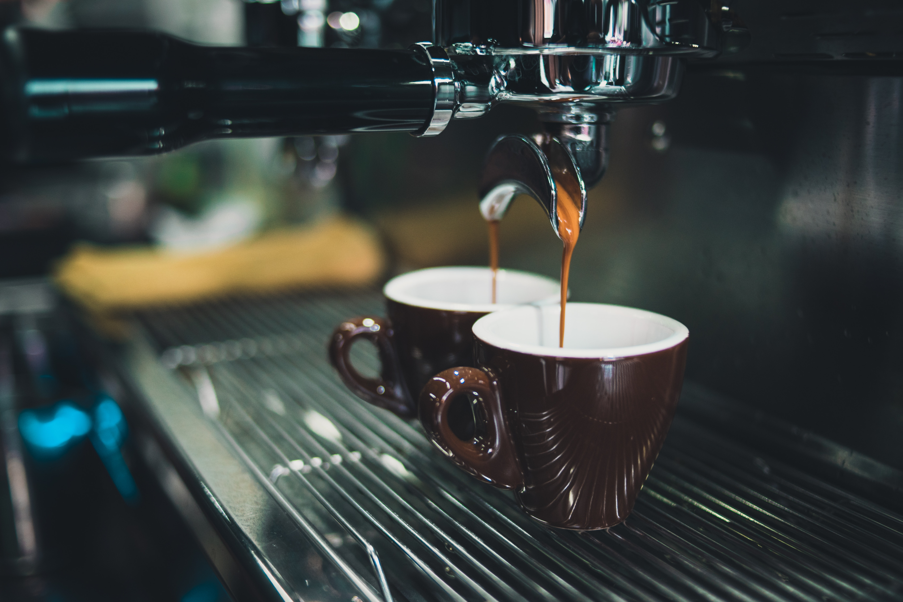

Secrets d'un bon espresso

Selon les Italiens, afin d'obtenir un espresso de qualité, il est important de respecter la règle des 4 M:
- Mélange espresso (miscela)
- Machine espresso (machina)
- Moulin-doseur (macinadosatore)
- Techniques du barista (mano)
Ainsi, il ne suffit pas d'avoir une machine espresso pour faire un espresso de qualité.
Mélange espresso (miscela)
À l'origine de tout bon espresso se trouve un bon mélange. Quoi qu'un bon mélange espresso ne suffit pas pour obtenir un bon espresso, il est une partie importante de l'équation.
Un mélange espresso italien est par définition et par tradition composé de cafés de plusieurs origines. C'est uniquement de cette façon que nous pouvons obtenir un espresso balancé. De plus, selon les Italiens, plus un mélange possède de cafés de différentes origines, plus il sera complexe et riche (on dit qu'un bon mélange comporte entre 5 et 13 différents cafés).
Un mélange espresso italien est habituellement composé en fonction des trois critères suivants:
- Complémentaire (ex. un arabica lavé pour l'acidité et un arabica naturel pour le corps et la structure)
- Compatible (ex. certains arabica lavé accentuent l'astringeance de certains types de cafés)
- Constance (en cas de problèmes d'approvisionnement ou de changement majeur)
Il est important aussi que les cafés utilisés dans le mélange soit d'une qualité exceptionnelle puisque le processus d'extraction met en évidence à la fois les qualités et les défauts de chaque café.
Machine espresso (machina)
Qu'y a-t-il de si spécial à envoyer 25ml d'eau à 90ºC avec une pression de 9 bar à travers un lit de café moulu?
Envoyer 25ml d'eau à 90ºC avec une pression de 9 bar à travers un lit de café moulu est une chose; produire des centaines, voir des milliers de tasses une après l'autre, en obtenant des résultats constants et en respectant la certification de l'espresso Italien, en est une autre.
Lors du choix d'une machine espresso, les points suivants sont importants à considérer:
- Fiabilité de la marque
- Assistance et support dans votre région
- Capacité de la machine lors de haut volume
- Dimension de la machine
- Type de machine (semi-automatique, automatique, super-automatique)
- Esthétique de la machine
- Accessoires
Moulin-doseur (macinadosatore)
Il ne fait aucun doute que le moulin-doseur est d'une importance primordiale pour l'obtention d'un espresso de qualité. Par conséquent, le choix de ce dernier ne doit pas se faire à la légère.
Voici quelques critères importants à évaluer:
- Fiabilité de la marque
- Assistance et support dans votre région
- Capacité de la machine lors de haut volume
- Type de meules (plates ou coniques)
- Nombre de révolutions
- Voltage et puissance
- Automatique ou pas
- Facilité de nettoyage
- Bruit
En général, si vous utilisez plus de 3 kilos par jour, il est préférable d'opter pour un moulin à meules coniques. Autrement, vous pouvez optez pour un moulin à meules plates.
Cependant, l'avantage du moulin à meules coniques est non seulement dans sa durée d'utilisation (1200kg vs 400kg), mais aussi dans son nombre de révolutions peu élevé comparé aux meules plates (400-500rpm vs 1400-1500rpm). Ainsi, en ayant un nombre de révolutions peu elevé, le café moulu surchauffe moins et par conséquent tend à mieux conserver les arômes du café. Toutefois, son coût est évidemment plus élevé.
Techniques du barista (mano)
Pour environ 30ml d'espresso, incluant la crema, l'extraction devrait prendre entre 20 et 30 secondes à partir du moment ou la pompe est activée. L'écoulement devrait avoir une texture mielleuse. Si l'extraction dépasse 30 secondes, ajustez la mouture afin qu'elle soit plus grosse. Si l'extraction prend moins de 20 secondes, ajustez la mouture afin qu'elle soit plus fine. Il est préférable de ne pas varier la pression que vous appliquez de façon à ne pas jouer avec plusieurs variables à la fois. Vous devriez obtenir environ 1ml par seconde par bec.
Étapes à suivre1 (selon David Schomer)
- Préchauffez les tasses.
- Moudre le café.
- Retirez le porte-filtre du groupe, enlevez le café et asséchez le panier avec un linge.
- Doser environ 18-20 grammes de café moulu dans le panier et égaliser avec le doigt (pour un portefiltre double de 18g).
- Utilisez le presse-café et pressez le café avec 15-30 livres de pression en prenant soin qu'il soit à niveau.
- Cognez doucement le porte-filtre avec le presse-café et pressez le café à nouveau avec 30 livres de pression. Finissez avec un polissage (10-15 livres) complet de 360 degré de la surface.
- Nettoyez attentivement avec les doigts le panier et le portefiltre afin qu'il ne reste pas de café moulu.
- Activez la pompe et faites couler environ 50ml d'eau afin d'éviter de brûler le café avec de l'eau trop chaude (la température optimale est de 90-95ºC).
- Placez le porte-filtre dans le groupe, activez la pompe et commencez à compter.
- Arrêtez l'extraction2 après environ 25 secondes, lorsque environ 30ml (par bec) a été extrait, ou encore lorsque l'extraction s'éclaircit.
Étapes à suivre1 (selon le standard "Espresso Italiano")
- Préchauffez les tasses.
- Retirez le porte-filtre du groupe, enlevez le café et asséchez le panier avec un linge.
- Placez le portefiltre parfaitement au centre du support du doseur.
- Dosez environ 14-15 grammes3 de café moulu4 dans le panier (pour un portefiltre double de 14-15g).
- Utilisez un presse-café convenable, préférablement en métal et d'un certain poids5.
- Donner une serie de petits coups sur le portefiltre avec la main jusqu'à ce que le café moulu soit parfaitement à niveau.
- Pressez parfaitement parralèle le café avec une pression minimum de 5kg (~10 livres) en vous assurant que la pression est uniforme sur toute la surface (le café doit offrir une perméabilité uniforme).
- Nettoyez attentivement (avec la main ou avec un pinceau) le panier et le portefiltre afin qu'il ne reste pas de café moulu.
- Placez le porte-filtre dans le groupe et activez la pompe.
- L'extraction devrait prendre entre 20 et 30 secondes, environ 25-30ml (par bec) devrait avoir été extrait.
Notes
1 Il est important de faire vos propres essais en fonction de votre équipements, votre mélange et vos goûts. Ces règles ne sont que des lignes directrices.
2 L'extraction devrait débuter par quelques goûtes de crema et être suivi d'un flot constant et continu en volume et en vitesse.
3 Puisque le moulin-doseur fonctionne au volume de café, il est important d'avoir fait l'ajustement de votre moulin selon votre mélange afin qu'il délivre les doses de café voulu. Il existe une molette dans votre moulin-doseur à cet effet.
4 Notez que le café ne devrait pas avoir été moulu depuis plus d'une heure.
5 Pourquoi ne pas utilisez celui du moulin-doseur? Deux raisons:
- L'action de forcer vers le haut n'est pas naturel et dans certain cas peut ne pas permettre d'atteindre la pression requise.
- Il est très difficile d'effectuer une pression parfaitement horizontale permettant d'offrir une perméabilité uniforme qui ne favorisa pas la création de chemin d'extraction préférentiel.
Si toutefois vous désirez utiliser le presse-café du moulin-doseur, vous devriez le tenir fermement avec une main et presser le café avec l'autre.